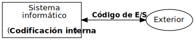

Introducción
Ricardo Pérez López
IES Doñana, curso 2019/2020
1 Conceptos básicos
1.1 Informática
Definición:
Informática:
La ciencia que estudia los sistemas de tratamiento automático de la información, también llamados sistemas informáticos.
Estos sistemas están formados por:
- elementos físicos (hardware)
- elementos lógicos (software) y
- elementos humanos (profesionales y usuarios).
El hardware, a su vez, está formado por componentes:
- Ordenadores
- Soportes de almacenamiento
- Redes de comunicaciones
- …
1.1.1 Procesamiento automático
- El procesamiento automático de la información siempre tiene el mismo esquema de funcionamiento:

El objetivo del procesamiento automático de la información es convertir los datos de entrada en datos de salida mediante un hardware que ejecuta las instrucciones definidas por un software (programas).
Los programas gobiernan el funcionamiento del hardware, indicándole qué tiene que hacer y cómo.
La Programación es la ciencia y el arte de diseñar dichos programas.
1.1.1.1 Ejemplos
Calcular la suma de cinco números:
Entrada: los cinco números.
Proceso: sumar cada número con el siguiente hasta acumular el resultado final.
Salida: la suma calculada.
Dada una lista de alumnos con sus calificaciones finales, obtener otra lista ordenada de mayor a menor por la calificación obtenida y que muestre sólo los alumnos aprobados:
Entrada: Una lista de pares (Nombre alumno, Calificación).
Proceso: Eliminar de la lista los pares que tengan una calificación menor que cinco y ordenar la lista resultante de mayor a menor según la calificación.
Salida: la lista ordenada de alumnos aprobados.
1.2 Ordenador
1.2.1 Definición
Ordenador:
Un ordenador es una máquina que procesa información automáticamente de acuerdo con un programa almacenado.
Es una máquina.
Su función es procesar información.
El procesamiento se realiza de forma automática.
El procesamiento se realiza siguiendo un programa (software).
Este programa está almacenado en una memoria interna del mismo ordenador (arquitectura de Von Neumann).
1.2.2 Funcionamiento básico
1.2.2.1 Elementos funcionales
Un ordenador consta de tres componentes principales:
Unidad central de proceso (CPU) o procesador
Unidad aritmético-lógica (ALU)
Unidad de control (UC)
Memoria
Memoria principal o central
Memoria de acceso aleatorio (RAM)
Memoria de sólo lectura (ROM)
Memoria secundaria o externa
Dispositivos de E/S
Dispositivos de entrada
Dispositivos de salida
1.2.2.2 Unidad central de proceso (CPU) o procesador
Unidad aritmético-lógica (ALU):
Realiza los cálculos y el procesamiento numérico y lógico.
Unidad de control (UC):
Ejecuta de las instrucciones enviando las señales a las distintas unidades funcionales involucradas.
1.2.2.3 Memoria
Memoria principal o central:
Almacena los datos y los programas que los manipulan.
Ambos (datos y programas) deben estar en la memoria principal para que la CPU pueda acceder a ellos.
Dos tipos:
Memoria de acceso aleatorio (RAM):
Su contenido se borra al apagar el ordenador.
Memoria de sólo lectura (ROM):
Información permanente (ni se borra ni se puede cambiar).
Contiene la información esencial (datos y software) para que el ordenador pueda arrancar.
Memoria secundaria o externa:
La información no se pierde al apagar el ordenador.
Más lenta que la memoria principal, pero de mucha más capacidad.
1.2.2.4 Dispositivos de E/S
Dispositivos de entrada:
Introducen datos en el ordenador (ejemplos: teclado, ratón, escáner…)
Dispositivos de salida:
Vuelcan datos fuera del ordenador (ejemplos: pantalla, impresora…)
Dispositivos de entrada/salida:
Actúan simultáneamente como dispositivos de entrada y de salida (ejemplos: pantalla táctil, adaptador de red…)
Los dispositivos que acceden a soportes de almacenamiento masivo (las memorias secundarias) también se pueden considerar dispositivos de E/S:
Los soportes de sólo lectura se leen con dispositivos de entrada (ejemplo: discos ópticos).
Los soportes de lectura/escritura operan como dispositivos de entrada/salida (ejemplos: discos duros, pendrives, tarjetas SD…).

El programa se carga de la memoria secundaria a la memoria principal.
Una vez allí, la CPU va extrayendo las instrucciones que forman el programa y las va ejecutando paso a paso, en un bucle continuo que se denomina ciclo de instrucción.
Durante la ejecución del programa, la CPU recogerá los datos de entrada desde los dispositivos de entrada y los almacenará en la memoria principal, para que las instrucciones puedan operar con ellos.
Al finalizar el programa, los datos de salida se volcarán hacia los dispositivos de salida.
1.2.2.6 Ciclo de instrucción
En la arquitectura Von Neumann, los programas se almacenan en la memoria principal junto con los datos (por eso también se denomina «arquitectura de programa almacenado»).
Una vez que el programa está cargado en memoria, la CPU repite siempre los mismos pasos:
(Fetch) Busca la siguiente instrucción en la memoria principal.
(Decode) Decodifica la instrucción (identifica qué instrucción es y se prepara para su ejecución).
(Execute) Ejecuta la instrucción (envía las señales de control necesarias a las distintas unidades funcionales).

1.2.2.8 Representación de información
En un sistema informático, toda la información se almacena y se manipula en forma de números.
Por tanto, para que un sistema informático pueda procesar información, primero hay que representar dicha información usando números, proceso que se denomina codificación.
Codificación:
Proceso mediante el cual se representa información dentro de un sistema informático, asociando a cada dato (elemental o estructurado) uno o más valores numéricos.
Una codificación, por tanto, es una correspondencia entre un conjunto de datos y un conjunto de números llamado código. Al codificar, lo que hacemos es asociar a cada dato un determinado número dentro del código.
Hay muchos tipos de información (textos, sonidos, imágenes, valores numéricos…) y eso hace que pueda haber muchas formas de codificación.
Incluso un mismo tipo de dato (un número entero, por ejemplo) puede tener distintas codificaciones, cada una con sus características y propiedades.
Distinguimos la forma en la que se representa la información internamente en el sistema informático (codificación interna) de la que usamos para comunicar dicha información desde y hacia el exterior (codificación externa o de E/S).

1.2.2.10 Codificación interna
Los ordenadores son sistemas electrónicos digitales que trabajan conmutando entre varios posibles estados de una determinada magnitud física (voltaje, intensidad de corriente, etc.).
Lo más sencillo y práctico es usar únicamente dos estados posibles.
Por ejemplo:
0 V y 5 V de voltaje.
0 mA y 100 mA de intensidad de corriente.
A cada uno de los dos posibles estados le hacemos corresponder (arbitrariamente) un valor numérico 0 ó 1. A ese valor se le denomina bit (contracción de binary digit, dígito binario).
Por ejemplo, la memoria principal de un ordenador está formada por millones de celdas, parecidas a microscópicos condensadores. Cada uno de estos condensadores puede estar cargado o descargado y, por tanto, es capaz de almacenar un bit:
- Condensador cargado: bit a 1
- Condensador descargado: bit a 0
Bit:
Un bit es, por tanto, la unidad mínima de información que es capaz de almacenar y procesar un ordenador, y equivale a un dígito binario.
En la práctica, se usan unidades múltiplos del bit:
- 1 byte = 8 bits
- 1 Kibibyte (KiB) = 2^{10} = 1024 bytes
- 1 Mebibyte (MiB) = 2^{20} bytes = 1024 Kilobytes
- 1 Gibibyte (GiB) = 2^{30} bytes = 1024 Mebibytes
- 1 Tebibyte (TiB) = 2^{40} bytes = 1024 Gibibytes
1.2.2.12 Sistema binario
El sistema de numeración que usamos habitualmente los seres humanos es el decimal o sistema en base diez.
En ese sistema disponemos de diez dígitos distintos (0, 1, 2, 3, 4, 5, 6, 7, 8 y 9) y cada dígito en un determinado número tiene un peso que es múltiplo de una potencia de diez.
Por ejemplo: 243 = 2 \times 10^2 + 4 \times 10^1 + 3 \times 10^0
El sistema de numeración que usan los ordenadores es el sistema binario o sistema en base dos, en el cual disponemos sólo de dos dígitos (0 y 1) y cada peso es múltiplo de una potencia de dos.
Por ejemplo: 101 = 1 \times 2^2 + 0 \times 2^1 + 1 \times 2^0
Generalmente, los números naturales se codifican internamente mediante su representación en binario.
Los números enteros se suelen codificar mediante:
Bit de signo (signo y magnitud)
Complemento a uno
Complemento a dos
Los números reales se pueden codificar mediante:
Coma fija
Coma flotante
Simple precisión
Doble precisión
Decimal codificado en binario (BCD)
1.2.2.14 Codificación externa
Para representar cadenas de caracteres y comunicarse con el exterior, el ordenador utiliza códigos de E/S o códigos externos.
A cada carácter (letra, dígito, signo de puntuación, símbolo especial…) le corresponde un código (número) dentro de un conjunto de caracteres.
Existen conjuntos de caracteres:
De longitud fija: a todos los caracteres les corresponden un código de igual longitud.
De longitud variable: en el mismo conjunto de caracteres hay códigos más largos y más cortos (por tanto, hay caracteres que ocupan más bytes que otros).
1.2.2.15 ASCII
American Standard Code for Information Interchange.
El conjunto de caracteres ASCII (o código ASCII) es el más implantado en el hardware de los equipos informáticos.
Es la base de otros códigos más modernos, como el ISO-8859-1 o el Unicode.
Es un código de 7 bits:
- Cada carácter ocupa 7 bits.
- Hay 2^7 = 128 caracteres posibles.
- Los 32 primeros códigos (del 0 al 31) son no imprimibles (códigos de control).
El ISO-8859-1 es un código de 8 bits que extiende el ASCII con un bit más para contener caracteres latinos.
1.2.2.16 Unicode
Con 8 bits (y con 7 bits aún menos) no es posible representar todos los posibles caracteres de todos los sistemas de escritura usados en el mundo.
Unicode es el estándar de codificación de caracteres más completo y universal en la actualidad.
Cada carácter en Unicode se define mediante un identificador numérico llamado code point.
Unicode define tres formas de codificación:
- UTF-8: codificación de 8 bits, de longitud variable (cada code point puede ocupar de 1 a 4 bytes). El más usado en la actualidad.
- UTF-16: codificación de 16 bits, de longitud variable (cada code point puede ocupar 1 ó 2 palabras de 16 bits).
- UTF-32: codificación de 32 bits, de longitud fija (cada code point ocupa 1 palabra de 32 bits).
1.3 Algoritmo
1.3.1 Definición
Algoritmo:
Un algoritmo es un método para resolver un problema.
Está formado por una secuencia de pasos o instrucciones que se deben seguir (o ejecutar) para resolver el problema.
La palabra «algoritmo» proviene de Mohammed Al-Khowârizmi, matemático persa que vivió durante el siglo IX y reconocido por definir una serie de reglas paso a paso para sumar, restar, multiplicar y dividir números decimales.
Euclides, el gran matemático griego (del siglo IV a. C.) que inventó un método para encontrar el máximo común divisor de dos números, se considera con Al-Khowârizmi el otro gran padre de la Algorítmica (la ciencia que estudia los algoritmos).
- El estudio de los algoritmos es importante porque la resolución de un problema exige el diseño de un algoritmo que lo resuelva.

1.3.2 Características
Un algoritmo debe ser:
Preciso: debe indicar el orden de ejecución de cada paso.
Definido: si se sigue un algoritmo dos veces, se debe obtener el mismo resultado cada vez.
Finito: debe terminar en algún momento, es decir, debe tener un número finito de pasos.
1.3.3 Representación
Un algoritmo se puede describir usando el lenguaje natural, es decir, cualquier idioma humano.
¿Qué problemas tiene esta forma de representación?
Ambigüedad
Imprecisión
Instrucciones para hacer una tortilla:
- Coger dos huevos.
- Encender el fuego.
- Echar aceite a la sartén.
- Batir los huevos.
- Echar los huevos batidos en la sartén.
- Esperar a que se haga por debajo.
- Dar la vuelta a la tortilla.
- Esperar de nuevo.
- Sacar cuando esté lista.
Fin
1.3.3.1 Ordinograma
Representación gráfica que describe un algoritmo en forma de diagrama de flujo.
Las flechas indican el orden de ejecución de las instrucciones.
Los nodos condicionales (los rombos) indican que la ejecución se bifurca a uno u otro camino dependiendo de una condición.
1.3.3.2 Ejemplo
Determinar cuál es el máximo de dos números

1.3.3.3 Pseudocódigo
1.3.4 Cualidades deseables
1.3.5 Computabilidad
1.3.6 Corrección
1.3.7 Complejidad
1.4 Programa
1.5 Lenguaje de programación
2 Evolución histórica
2.1 Culturas de la programación
2.2 Ingeniería del software
3 Resolución de problemas mediante programación
3.1 Análisis del problema
3.2 Especificación
3.3 Diseño del algoritmo
3.4 Codificación del algoritmo en forma de programa
4 Paradigmas de programación
4.1 Imperativo
4.1.1 Estructurado
4.1.2 Orientado a objetos
4.2 Declarativo
4.2.1 Funcional
4.2.2 Lógico
5 Lenguajes de programación
5.1 Definición
5.1.1 Sintaxis
5.1.1.1 Notación EBNF
5.1.2 Semántica
5.2 Evolución histórica
5.3 Clasificación
5.3.1 Por nivel
5.3.2 Por generación
5.3.3 Por paradigma
6 Traductores
6.1 Compiladores
6.2 Intérpretes
6.2.1 Interactivos (REPL)
6.2.2 Por lotes
7 Entornos integrados de desarrollo
7.1 Terminal
7.1.1 Zsh
7.1.2 Oh My Zsh
7.1.3 less
7.2 Editores de texto
7.2.1 Editores vs. IDE
7.2.2 Vim y less
7.2.3 Visual Studio Code
7.2.3.1 Instalación
7.2.3.2 Configuración
7.2.3.3 Extensiones
Bibliografía
Joyanes Aguilar, Luis. 2008. Fundamentos de Programación. Aravaca: McGraw-Hill Interamericana de España.